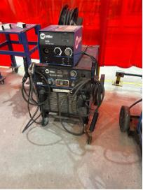
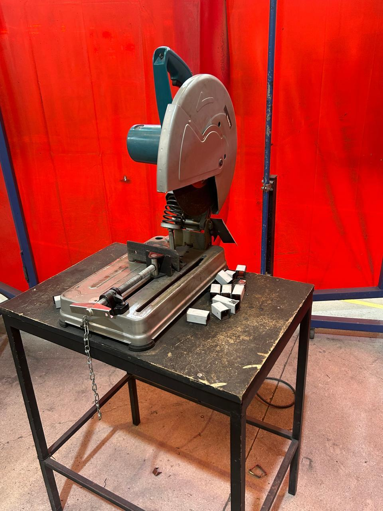

Reporte de Clase 2
Institución: Universidad Iberoamericana de Puebla
Alumno: Jesús Emiliano
Tema: Cortadora de Disco y Soldadura
1. Introducción de la Clase
En esta sesión, el profesor Oliver y el profesor Cholula nos enseñaron a utilizar la cortadora de disco y nos explicaron el funcionamiento de las máquinas de soldar.
2. Medidas de Seguridad
Antes de comenzar a utilizar las máquinas, cumplimos con las medidas necesarias para garantizar nuestra seguridad. Previamente, el profesor nos solicitó llevar bata de laboratorio u overol y botas con casquillo. Adicionalmente, la universidad nos proporcionó equipo de protección: - Guantes - Pechera - Lentes de seguridad - Careta para soldar (para proteger la vista) y protección para extremidades ante la caída de materiales pesados.
Evidencia de Equipo de Seguridad
| Equipo de Protección 1 | Equipo de Protección 2 |
|---|---|
 |
 |
3. Funcionamiento de la Máquina de Soldar
La primera máquina utilizada fue una Miller. El profesor Cholula nos explicó los pasos para operarla:
- Conexión de la máquina: Se conecta a un enchufe especial que administra una mayor corriente.
- Conexión con la mesa: La máquina cuenta con dos pinzas:
- Pinza de tierra: Se conecta a la mesa metálica de trabajo.
- Portaelectrodo: Sostiene la varilla que se fundirá en el material. (El sistema funciona como un circuito que, al cerrarse, funde la varilla).
- Ajuste de voltaje y corriente: Se configuran según la acción a realizar, el grosor del material y la experiencia del soldador. Un voltaje muy alto puede perforar la pieza; uno muy bajo impedirá que la varilla se funda correctamente, provocando una unión defectuosa o que se pegue.
- Confirmar medidas de seguridad: Antes de iniciar, verifica que las personas a tu alrededor tengan puesta la careta para evitar daños en su vista. Usa guantes aislantes en todo momento y mantén una técnica adecuada.
Evidencia de la Máquina

4. Funcionamiento de la Cortadora de Disco
La segunda máquina utilizada fue la cortadora de disco, donde el profesor Oliver mostró el procedimiento seguro:
- Fijar el material: Asegurar el material con la prensa de forma firme para evitar movimientos y mantener la estabilidad.
- Encendido: Presionar los dos botones de la cortadora simultáneamente (de lo contrario, no se activará).
- Realizar el corte: El movimiento debe efectuarse a una velocidad estable y de arriba hacia abajo hasta el fondo, evitando piezas defectuosas y minimizando riesgos para ti y los demás.
- Manejo posterior: No tocar el material cortado directamente con las manos, ya que el corte por fricción eleva considerablemente la temperatura del metal.
Evidencia de la Cortadora

5. Práctica
La sesión combinó teoría y práctica. El profesor Cholula nos guió para soldar una pieza metálica de la manera más limpia posible, aconsejándonos no tenerle miedo a la máquina para evitar errores por inseguridad. Posteriormente, el profesor Oliver nos auxilió de forma individual para realizar un corte en un tubo metálico con la cortadora.